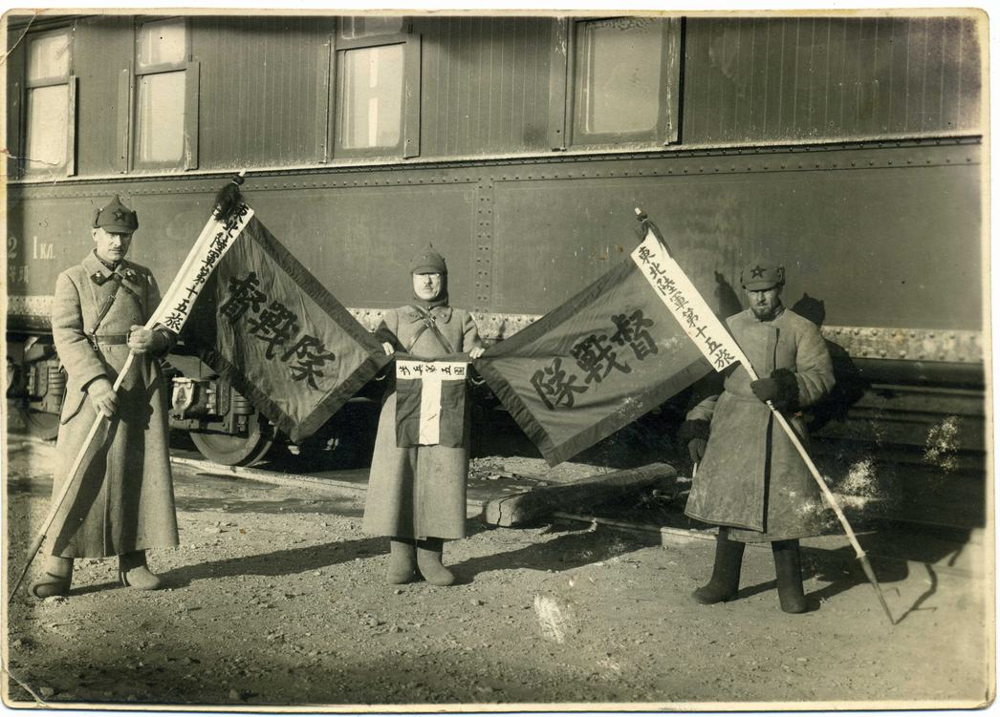

紅旗遠東特別集團軍（Особая Краснознамённая Дальневосточная армия, ODVA）是 1929 年至 1938 年間，蘇聯工農紅軍在遠東地區防禦日本與處理中東路事件的核心武力。

影像紀錄：1929 年中東路事件中，蘇聯紅軍展示繳獲的東北陸軍第十五旅及督戰隊旗幟。
歷史發展脈絡
從國內戰爭結束到抗日戰爭爆發前夕，該軍團經歷了多次關鍵轉型：
- 1922年： 遠東共和國人民革命軍改組為「紅旗第 5 集團軍」。
- 1929年8月： 因「中東路事件」爆發，正式組建「遠東特別集團軍」，負責指揮步兵第 18 軍、第 19 軍及遠東區艦隊。
- 1930年： 因在中東路戰爭中戰功顯赫，被授予紅旗勳章，正式定名為「紅旗遠東特別集團軍」。
- 1938年6月： 為了應對日益嚴峻的日本威脅，改組為「紅旗遠東方面軍」，由布留赫爾元帥出任司令員。
領導層名錄
軍團的核心指揮體系由多位蘇聯著名將領組成：
| 職稱 | 姓名 | 備註 |
|---|---|---|
| 總司令 | 瓦西里·布柳赫爾 | 蘇聯五大元帥之一 |
| 參謀長 (1929) | 阿爾伯特·亞努維奇·拉平 | 早期組建成員 |
| 參謀長 (1930-) | 米哈伊爾·桑古爾斯基 | - |
| 內務人民委員部駐軍首長 | 亨里希·柳什科夫 | 後逃亡至日本 |
特殊編制：農墾軍
1935 年起，該軍團下轄了特別農墾軍，由退伍紅軍戰士組成數十個集體農莊。這種「屯墾戍邊」的模式，是當時蘇聯在遠東鞏固邊境的重要策略之一。